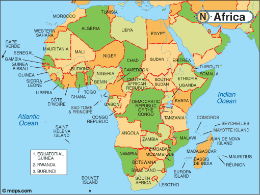

Issac's Notes on Continents
South America

South America is a continent located in the western hemisphere, mostly in the southern hemisphere, with a relatively small portion in the northern hemisphere. It is also considered a subcontinent of the Americas,[1][2] which is the model used in Latin languages speaking nations. The reference to South America instead of other regions (like Latin America or the Southern Cone) has relatively increased in the last decades, due to geopolitical dynamics (in particular, the rise of Brazil in the subcontinent).[3]
It is bordered on the west by the Pacific Ocean and on the north and east by the Atlantic Ocean; North America and the Caribbean Sea lie to the northwest. It includes twelve sovereign states – Argentina, Bolivia, Brazil, Chile, Colombia, Ecuador, Guyana, Paraguay, Peru, Suriname, Uruguay, and Venezuela – and two non-sovereign areas – French Guiana, a region of France, and the Falkland Islands, a British Overseas Territory (though disputed by Argentina). In addition to this, the ABC islands of the Kingdom of the Netherlands, Trinidad and Tobago, and Panama may also be considered part of South America.
South America has an area of 17,840,000 square kilometers (6,890,000 sq mi). Its population as of 2005 has been estimated at more than 371,090,000. South America ranks fourth in area (after Asia, Africa, and North America) and fifth in population (after Asia, Africa, Europe, and North America). Brazil is by far the most populous South American country, with more than half of the continent's population, followed by Colombia, Argentina, Venezuela and Peru.[4] In recent decades Brazil has also concentrated half of the region's GDP and has become a first regional power.[3]
Most of the population lives near the continent's western or eastern coasts while the interior and the far south are sparsely populated. The geography of western South America is dominated by the Andes mountains; in contrast, the eastern part contains both highland regions and large lowlands where rivers such as the Amazon, Orinoco, and Paraná flow. Most of the continent lies in the tropics.
The continent's cultural and ethnic outlook has its origin with the interaction of indigenous peoples with European conquerors and immigrants and, more locally, with African slaves. Given a long history of colonialism, the overwhelming majority of South Americans speak Portuguese or Spanish, and societies and states commonly reflect Western traditions.The history of South America is the study of the past, particularly the written record, oral histories, and traditions, passed down from generation to generation on the continent of South America. South America has a history that has a wide range of human cultures and forms of civilization. The Norte Chico civilization in Peru is the oldest civilization in the Americas and one of the first six independent civilizations in the world; it was contemporaneous with the Egyptian pyramids. It predated the Mesoamerican Olmec by nearly two millennia.
While millennia of independent development were interrupted by the Portuguese and Spanish colonization of the late 15th century and the demographic collapse that followed, the continent's mestizo and indigenous cultures remain quite distinct from those of their colonizers. Through the trans-Atlantic slave trade, South America (especially Brazil) became the home of millions of people of the African diaspora. The mixing of races led to new social structures.
The tensions between colonial countries in Europe, indigenous peoples, and escaped slaves shaped South America from the 16th through the 19th centuries. With the revolution for independence from the Spanish crown achieved during the 19th century, South America underwent yet more social and political changes. These have included nation building projects, absorbing waves of immigration from Europe in the late 19th and 20th centuries, dealing with increased international trade, colonization of hinterlands, and wars about territory ownership and power balance. During this period there has also been reorganization of Indian rights and duties, subjugation of Indians living in the states' frontiers, that lasted until the early 1900s; liberal-conservative conflicts among the ruling classes, and major demographic and environmental changes accompanying development of sensitive habitats.
North America
North America is a continent entirely within the Northern Hemisphere and almost all within the Western Hemisphere. It can also be considered a northern subcontinent of the Americas.[2][3] It is bordered to the north by the Arctic Ocean, to the east by the Atlantic Ocean, to the west and south by the Pacific Ocean, and to the southeast by South America and the Caribbean Sea.
North America covers an area of about 24,709,000 square kilometers (9,540,000 square miles), about 16.5% of the earth's land area and about 4.8% of its total surface. North America is the third largest continent by area, following Asia and Africa,[4] and the fourth by population after Asia, Africa, and Europe.[5]
In 2013, its population was estimated at nearly 565 million people in 23 independent states, or about 7.5% of the world's population, if nearby islands (most notably the Caribbean) are included.
North America was reached by its first human populations during the last glacial period, via crossing the Bering land bridge. The so-called Paleo-Indian period is taken to have lasted until about 10,000 years ago (the beginning of the Archaic or Meso-Indian period). The Classic stage spans roughly the 6th to 13th centuries. The Pre-Columbian era ended with the arrival of European settlers during the Age of Discovery and the Early Modern period. Present-day cultural and ethnic patterns reflect different kind of interactions between European colonists, indigenous peoples, African slaves and their descendants. European influences are strongest in the northern parts of the continent while indigenous and African influences are relatively stronger in the south. Because of the history of colonialism, most North Americans speak English, Spanish or French and societies and states commonly reflect Western traditions.The history of North America encompasses the past developments of people populating the continent of North America. The continent became a human habitat later than continents such as Africa, Asia, and Europe, when people migrated across the Bering Sea 40,000 to 17,000 years ago.[1] These migrants settled in many locations on the continent, from the Inuit of the far north to the Mayans and Aztecs of the south. These isolated communities each developed their own unique ways of life and cultures, and their interaction with one another was limited in comparison to the extensive trade and conflict of civilizations across the Atlantic in Europe and Asia.
As the Age of Exploration dawned in Europe, Europeans began to arrive in the Americas and develop colonial ambitions for both North and South America. Christopher Columbus was credited with "discovering" the New World for Europeans, although at least the Norse are known to have explored it almost 500 years previously, and influxes of Europeans soon followed and overwhelmed the native population. North America became a staging ground for ongoing European rivalries. The continent was divided by three prominent European powers: Great Britain, France, and Spain. The influences of colonization by these states on North American cultures are still apparent today. Post-Columbian history as a "discovery" is a contested idea because the Americas were already heavily populated by the indigenous Native American peoples, now known to have been distinctive civilizations in their own right.
Conflict over resources on North America ensued in various wars between these powers, but, gradually, the new European colonies developed desires for independence. Revolutions, such as the American Revolution and Mexican War of Independence, created new, independent states that came to dominate North America. The Canadian Confederation formed in 1867, creating the modern political landscape of North America.
From the 19th to 21st centuries, North American states have developed increasingly deeper connections with each other. Although some conflicts have occurred, the continent has for the most part enjoyed peace and general cooperation between its states, as well as open commerce and trade between them. Modern developments include the opening of free trade agreements, extensive immigration from Mexico and Latin America, and drug trafficking concerns in these regions.
Europe
Europe is a continent that comprises the westernmost part of Eurasia. Europe is bordered by the Arctic Ocean to the north, the Atlantic Oceanur to the west, and the Mediterranean Sea to the south. To the east and southeast, Europe is generally considered as separated from Asia by the watershed divides of the Ural and Caucasus Mountains, the Ural River, the Caspian and Black Seas, and the waterways of the Turkish Straits.[4] Yet the non-oceanic borders of Europe—a concept dating back to classical antiquity—are arbitrary; the primarily physiographic term "continent" as applied to Europe also incorporates cultural and political elements whose discontinuities are not always reflected by the continent's current boundaries.
Europe is the world's second-smallest continent by surface area, covering about 10,180,000 square kilometres (3,930,000 sq mi) or 2% of the Earth's surface and about 6.8% of its land area. Of Europe's approximately 50 countries, Russia is the largest and most populous, spanning 39% of the continent and comprising 15% of its population, while Vatican City is the smallest both in terms of area and population. Europe is the third-most populous continent after Asia and Africa, with a population of 739–743 million or about 11% of the world's population.[5] Europe has a climate heavily affected by warm Atlantic currents that temper winters and summers on much of the continent, even at latitudes along which the climate in Asia and North America is severe. Further from the Atlantic, seasonal differences are mildly greater than close to the coast.
Europe, in particular ancient Greece, is the birthplace of Western civilization.[6][7][8] The fall of the Western Roman Empire, during the migration period, marked the end of ancient history and the beginning of an era known as the "Middle Ages". The Renaissance humanism, exploration, art, and science led the "old continent", and eventually the rest of the world, to the modern era. From this period onwards, Europe played a predominant role in global affairs. Between the 16th and 20th centuries, European nations controlled at various times the Americas, most of Africa, Oceania, and the majority of Asia.
The Industrial Revolution, which began in the United Kingdom at the end of the 18th century, gave rise to radical economic, cultural, and social change in Western Europe, and eventually the wider world. Both world wars were largely focused upon Europe, contributing to a decline in Western European dominance in world affairs by the mid-20th century as the United States and Soviet Union took prominence.[9] During the Cold War, Europe was divided along the Iron Curtain between NATO in the west and the Warsaw Pact in the east, until the revolutions of 1989 and fall of the Berlin Wall.
European integration led to the formation of the European Union, a political entity that lies between a confederation and a federation.[10] The EU originated in Western Europe but has been expanding eastward since the fall of the Soviet Union in 1991. The currency of most countries of the European Union, the Euro, is the most commonly used among Europeans and the EU's Schengen Are abolishes border and immigration controls among most of its member states.The history of Europe covers the peoples inhabiting the European continent from prehistory to the present. Some of the best-known civilizations of prehistoric Europe were the Minoan and the Mycenaean, which flourished during the Bronze Age until they collapsed in a short period of time around 1200 BC.
Europe depicted by Antwerp cartographer Abraham Ortelius in 1595
The period known as classical antiquity began with the emergence of the city-states of Ancient Greece. After ultimately checking the Achaemenid Persian advance in Europe through the Greco-Persian Wars in the 5th century BC, Greek influence would reach its zenith under the expansive empire of Alexander the Great, spreading throughout Asia, Africa, and other parts of Europe. The Roman Empire came to dominate the entire Mediterranean basin in a vast empire based on Roman law. By 300 AD the Roman Empire was divided into the Western and Eastern empires. During the 4th and 5th centuries, the Germanic peoples of northern Europe grew in strength and repeated attacks led to the Fall of the Western Roman Empire. AD 476 traditionally marks the end of the classical period and the start of the Middle Ages.
In Western Europe, Germanic peoples moved into positions of power in the remnants of the former Western Roman Empire and established kingdoms and empires of their own. Of all of the Germanic peoples, the Franks would rise to a position of hegemony over western Europe, the Frankish Empire reaching its peak under Charlemagne around AD 800. This empire was later divided into several parts; West Francia would evolve into the Kingdom of France, while East Francia would evolve into the Holy Roman Empire, a precursor to modern Germany and Italy. The British Isles were the site of several large-scale migrations.
The Viking Age, a period of migrations of Scandinavian peoples, occurred from the late 8th century to the middle 11th century. The Normans, a Viking people who settled in Northern France had a significant impact on many parts of Europe, from the Norman conquest of England to Southern Italy and Sicily. A group of uncertain origin but probably including Scandinavians, the Rus' people, would go on to found Kievan Rus', an early state which was a precursor for the modern country of Russia. After 1000 the Crusades, which were a series of religiously motivated military expeditions originally intended to bring the Levant back into Christian rule, began. The Crusaders opened trade routes which enabled the merchant republics of Genoa and Venice to become major economic powers. The Reconquista, a related movement, worked to reconquer Iberia for Christendom.
The peasants preparing the fields for the winter with a harrow and sowing for the winter grain, from the The Very Rich Hours of the Duke of Berry, c.1410
Eastern Europe in the High Middle Ages was dominated by the rise, and later fall, of the Mongol Empire. Led by Genghis Khan, the Mongols were a group of steppe nomads who established a decentralized empire which, at its height, extended from China in the east to the Black and Baltic seas in Europe. The Kievan Rus' state had broken up, replaced by several small warring states. In the face of the Mongol conquests, many of these states paid tribute to the Mongols, becoming effective vassals. As Mongol power waned towards the Late Middle Ages, the Grand Duchy of Moscow rose to become the strongest of the numerous Russian principalities and republics and would grow into the Tsardom of Russia in 1547. The Late Middle Ages represented a period of upheaval in Europe. The epidemic known as the Black Death and an associated famine caused demographic catastrophe in Europe as the population plummeted. Dynastic struggles and wars of conquest kept many of the states of Europe at war for much of the period. In Scandinavia, the Kalmar Union dominated the political landscape, while England fought with Scotland in the Wars of Scottish Independence and with France in the Hundred Years' War. In Central Europe, the Polish–Lithuanian Commonwealth became a large territorial empire, while the Holy Roman Empire, which was an elective monarchy, came to be dominated by the House of Habsburg, who would turn it into a hereditary position in all but name. Russia continued to expand southward and eastward into former Mongol lands as well. In the Balkans, the Ottoman Empire, a Turkish state originating in Anatolia, encroached steadily on former Byzantine lands, culminating in the Fall of Constantinople in 1453.
Beginning roughly in the 14th century in Florence, and later spreading through Europe with the development of the printing press, a Renaissance of knowledge challenged traditional doctrines in science and theology, with the Arabic texts and thought[1] bringing about rediscovery of classical Greek and Roman knowledge. Simultaneously, the Protestant Reformation under German Martin Luther questioned Papal authority. Henry VIII seized control of the English Church and its lands, allying in ensuing religious wars between German and Spanish rulers. The Reconquista of Portugal and Spain led to a series of oceanic explorations resulting in the Age of Discovery, establishing direct links with Africa, the Americas, and Asia, while religious wars continued to be fought in Europe, which ended in 1648 with the Peace of Westphalia. The Spanish crown maintained its hegemony in Europe and was the leading power on the continent until the signing of the Treaty of the Pyrenees, which ended a conflict between Spain and France that had begun during the Thirty Years' War. An unprecedented series of major wars and political revolutions took place around Europe and indeed the world in the period between 1610 and 1700. Observers at the time, and many historians since, have argued that wars caused the revolutions.[2]
A Watt steam engine. The steam engine, fuelled primarily by coal, propelled the Industrial Revolution in Great Britain and the world.
European overseas expansion led to the rise of colonial empires, producing the Columbian Exchange.[3] The combination of resource inflows from the New World and the Industrial Revolution of Great Britain, allowed a new economy based on manufacturing instead of subsistence agriculture.[4] Starting in 1775, British Empire colonies in America revolted to establish a representative government. Political change in continental Europe was spurred by the French Revolution under the motto liberté, égalité, fraternité. The ensuing French leader, Napoleon Bonaparte, conquered and enforced reforms through war up to 1815.
The period between 1815 and 1871 saw a large number of revolutionary attempts and independence wars. In France and the United Kingdom, socialism and trade union activity developed. The last vestiges of serfdom were abolished in Russia in 1861,[5] and Balkan nations began to regain independence from the Ottoman Empire. After the Franco-Prussian War, Germany and Italy unified into nation states, and most European states had completed their Risorgimento nationalism becoming constitutional monarchies. The capture of Rome in 1870 ended the Papal temporal power. Rivalry in a scramble for empires spread in what is known as The Age of Empire. The outbreak of the First World War in 1914 was precipitated by the rise of nationalism in Southeastern Europe as the Great Powers took up sides. The Allies, led by Britain and France, joined by Italy in 1915 and by the United States in 1917, defeated the Central Powers led by the German Empire and Austria-Hungary in 1918. During the Paris Peace Conference the Big Four imposed their terms in a series of treaties, especially the Treaty of Versailles. The human and material devastation was far greater than anyone dreamed. As Overy notes:
Anyone living in Russia, Italy, Germany or the new states carved out of the Austro-Hungarian empire knew that the great war had destroyed the old political order, overturned the class balance of the pre-1914 age, and generated ideological hatreds and race prejudices that reverberated down to the end of 1945 and even beyond.[6]
Germany lost its overseas empire and several provinces, had to pay large reparations, and was humiliated by the victors. They in turn had large debts to the United States. The Great Depression broke out in 1929, and led to the collapse of democracy in state after state. The Nazi regime under Adolf Hitler came to power in 1933, rearmed Germany, and along with Mussolini's Italy sought to gain full control of the continent by demands and appeasement, and then by the Second World War.
Following the Allied victory in the Second World War, Europe was divided by the Iron Curtain with Germany being split into East and West. The Central-East was dominated by the Soviet Union, and the countries in that region became communist states. The rest was dominated by capitalist countries under the economic and military leadership of the United States. Both of the leading countries were superpowers. Most non-communist European countries joined a US-led military alliance (NATO) and formed the European Economic Community amongst themselves. The countries in the Soviet sphere of influence joined the military alliance known as the Warsaw Pact and the economic bloc called Comecon. A few small countries were neutral. Germany and Italy became two major industrialized countries again, due their post-war economic miracle, and joined the 1st G6 summit with the UK and France. The European Union involved the division of powers, with taxation, health and education handled by the nation states, while the EU had charge of market rules, competition, legal standards and environmentalism. Defense policy was handled by the nations through NATO, but the EU did have a role in setting foreign policies. The Soviet economic and political system collapsed in 1989-91, leading first to the end of communism in the satellite countries in 1989, and then to the dissolution of the Soviet Union itself in 1991. As a consequence, Germany was reunited, Europe's integration deepened, the continent became depolarised, and the European Union expanded to include many of the formerly communist European countries.
The European Union came under increasing pressure because of the worldwide recession after 2008. The major issues include financial aid to near-bankrupt countries, increasing intolerance of poorly assimilated immigrants, distrust of Germany's increasing power, tensions with Russia, rejection of Turkey's membership, and different views about the EU's future. The whole future of the EU is in doubt following the intended withdrawal of the United Kingdom after 52% of citizens voted in the June 2016 referendum to leave the EU, leading into a complex separation process implying political and economic changes for the UK and other countries.
Asia
Asia (Listeni/ˈeɪʒə, ˈeɪʃə/) is Earth's largest and most populous continent, located primarily in the eastern and northern hemispheres and sharing the continental landmass of Eurasia with the continent of Europe. Asia covers an area of 44,579,000 square kilometers, about 30% of Earth's total land area and 8.7% of the Earth's total surface area. The continent, which has long been home to the majority of the human population[3][not in citation given], was the site of many of the first civilizations. Asia is notable for not only its overall large size and population, but also dense and large settlements as well as vast barely populated regions within the continent of 4.4 billion people.
In general terms, Asia is bounded on the east by the Pacific Ocean, on the south by the Indian Ocean and on the north by the Arctic Ocean. The western boundary with Europe is a historical and cultural construct, as there is no clear physical and geographical separation between them. The most commonly accepted boundaries place Asia to the east of the Suez Canal, the Ural River, and the Ural Mountains, and south of the Caucasus Mountains and the Caspian and Black Seas.[4]
Given its size and diversity, the concept of Asia—a name dating back to classical antiquity—may actually have more to do with human geography than physical geography.[11] Asia varies greatly across and within its regions with regard to ethnic groups, cultures, environments, economics, historical ties and government systems. It also has a mix of many different climates ranging from the equatorial south via the hot desert in the Middle East, temperate areas in the east and the extremely continental centre to vast subarctic and polar areas in Siberia.The history of Asia can be seen as the collective history of several distinct peripheral coastal regions such as, East Asia, South Asia, and the Middle East linked by the interior mass of the Eurasian steppe.
The coastal periphery was the home to some of the world's earliest known civilizations, with each of the three regions developing early civilizations around fertile river valleys. These valleys were fertile because the soil there was rich and could bear many root crops. The civilizations in Mesopotamia, the Indus Valley, and China shared many similarities and likely exchanged technologies and ideas such as mathematics and the wheel. Other notions such as that of writing likely developed individually in each area. Cities, states and then empires developed in these lowlands.
The steppe region had long been inhabited by mounted nomads, and from the central steppes they could reach all areas of the Asian continent. The northern part of the continent, covering much of Siberia was also inaccessible to the steppe nomads due to the dense forests and the tundra. These areas in Siberia were very sparsely populated.
The centre and periphery were kept separate by mountains and deserts. The Caucasus, Himalaya, Karakum Desert, and Gobi Desert formed barriers that the steppe horsemen could only cross with difficulty. While technologically and culturally the city dwellers were more advanced, they could do little militarily to defend against the mounted hordes of the steppe. However, the lowlands did not have enough open grasslands to support a large horsebound force. Thus the nomads who conquered states in the Middle East were soon forced to adapt to the local societies.
Asia's history would feature major developments seen in other parts of the world, as well as events that would affect those other regions. These include the trade of the Silk Road, which spread cultures, languages, religion, and disease throughout Afro-Eurasian trade. Another major advancement was the innovation of gunpowder in medieval China, which led to advanced warfare through the use of guns.
Africa

Africa is the world's second-largest and second-most-populous continent. At about 30.3 million km² (11.7 million square miles) including adjacent islands, it covers six per cent of Earth's total surface area and 20.4 per cent of its total land area.[2] With 1.1 billion people as of 2013, it accounts for about 15% of the world's human population.[1] The continent is surrounded by the Mediterranean Sea to the north, both the Suez Canal and the Red Sea along the Sinai Peninsula to the northeast, the Indian Ocean to the southeast, and the Atlantic Ocean to the west. The continent includes Madagascar and various archipelagos. It contains 54 fully recognized sovereign states (countries), nine territories and two de facto independent states with limited or no recognition.[3]
Africa's population is the youngest amongst all the continents;[4][5] the median age in 2012 was 19.7, when the worldwide median age was 30.4.[6] Algeria is Africa's largest country by area, and Nigeria by population. Africa, particularly central Eastern Africa, is widely accepted as the place of origin of humans and the Hominidae clade (great apes), as evidenced by the discovery of the earliest hominids and their ancestors, as well as later ones that have been dated to around seven million years ago, including Sahelanthropus tchadensis, Australopithecus africanus, A. afarensis, Homo erectus, H. habilis and H. ergaster – with the earliest Homo sapiens (modern human) found in Ethiopia being dated to circa 200,000 years ago.[7] Africa straddles the equator and encompasses numerous climate areas; it is the only continent to stretch from the northern temperate to southern temperate zones.[8]
Africa hosts a large diversity of ethnicities, cultures and languages. In the late 19th century European countries colonized most of Africa. Most present states in Africa originate from a process of decolonization in the 20th century.
China and India alternated in being the largest economies in the world from 1 to 1800 A.D. China was a major economic power and attracted many to the east,[5][6][7][8] and for many the legendary wealth and prosperity of the ancient culture of India personified Asia,[9] attracting European commerce, exploration and colonialism. The accidental discovery of America by Columbus in search for India demonstrates this deep fascination. The Silk Road became the main East-West trading route in the Asian hitherland while the Straits of Malacca stood as a major sea route. Asia has exhibited economic dynamism (particularly East Asia) as well as robust population growth during the 20th century, but overall population growth has since fallen.[10] Asia was the birthplace of most of the world's mainstream religions including Christianity, Islam, Judaism, Hinduism, Buddhism, Confucianism, Taoism (or Daoism), Jainism, Sikhism, Zoroastranism, as well as many other religions.The history of Africa begins with the emergence of Homo sapiens in East Africa, and continues into the present as a patchwork of diverse and politically developing nation states. The recorded history of early civilization arose in Sudan (kurma civilization) (originally as a part of the Kingdom of Kush pre-dating well recorded history[1]), and later in Ancient Egypt, the Sahel, the Maghreb and the Horn of Africa. During the Middle Ages, Islam spread west from Arabia to Egypt, crossing the Maghreb and the Sahel. Some notable pre-colonial states and societies in Africa include the Kingdom of Nri, Nok culture, Mali Empire, Songhai Empire, Benin Empire, Ashanti Empire, Ghana Empire, Mossi Kingdoms, Mutapa Empire, Kingdom of Mapungubwe, Kingdom of Sine, Kingdom of Sennar, Kingdom of Saloum, Kingdom of Baol, Kingdom of Cayor, Kingdom of Zimbabwe, Kingdom of Kongo, Empire of Kaabu, Ancient Carthage, Numidia, Mauretania, the Aksumite Empire, the Ajuran Sultanate, and the Adal Sultanate.
From the mid 7th century, the Arab slave trade saw Muslim Arabs enslave Africans following an armistice between the Rashidun Caliphate and the Kingdom of Makuria at the Second Battle of Dongola in 652AD. They were transported along with Asians and Europeans across the Red Sea, Indian Ocean, and Sahara desert.
From the late 15th century, Europeans joined Arabs with the Portuguese initially acquiring slaves through trade and later by force as part of the Atlantic Slave Trade. They transported enslaved West, Central, and South Africans overseas both east and west in the African slave trade.[2]
In the late 19th and early 20th centuries European colonization of Africa developed rapidly in the Scramble for Africa. It is widely believed that Africa had up to 10,000 different states and autonomous groups with distinct languages and customs before it was colonized.[3] Following struggles for independence in many parts of the continent, as well as a weakened Europe after the Second World War, decolonization took place, culminating in the 1960 Year of Africa.
Africa's history has been challenging for research in the field of African studies because of the scarcity of written sources in large parts of the continent particularly with the destruction of many of the most important manuscripts from Timbuktu. Scholarly techniques such as the recording of oral history, historical linguistics, archaeology and genetics have been crucial.
Australia
Australia (Listeni/əˈstreɪliə/, /ɒ-/, /-ljə/),[10][11] officially the Commonwealth of Australia,[12] is a country comprising the mainland of the Australian continent, the island of Tasmania, and numerous smaller islands. It is the world's sixth-largest country by total area. Neighbouring countries include Papua New Guinea, Indonesia and East Timor to the north; the Solomon Islands and Vanuatu to the north-east; and New Zealand to the south-east.
For about 50,000 years[13] before the first British settlement in the late 18th century,[14][15] Australia was inhabited by indigenous Australians,[16] who spoke languages grouped into roughly 250 language groups.[17][18] After the European discovery of the continent by Dutch explorers in 1606, Australia's eastern half was claimed by Great Britain in 1770 and initially settled through penal transportation to the colony of New South Wales from 26 January 1788. The population grew steadily in subsequent decades; the continent was explored and an additional five self-governing crown colonies were established. On 1 January 1901, the six colonies federated, forming the Commonwealth of Australia. Since federation, Australia has maintained a stable liberal democratic political system that functions as a federal parliamentary constitutional monarchy comprising six states and several territories. The population of 24 million[5] is highly urbanised and heavily concentrated in the eastern states and on the coast.[19]
Australia is a developed country and one of the wealthiest in the world, with the world's 12th-largest economy. In 2014 Australia had the world's fifth-highest per capita income.[20] Australia's military expenditure is the world's 13th-largest. With the second-highest human development index globally, Australia ranks highly in many international comparisons of national performance, such as quality of life, health, education, economic freedom, and the protection of civil liberties and political rights.[21] Australia is a member of the United Nations, G20, Commonwealth of Nations, ANZUS, Organisation for Economic Co-operation and Development (OECD), World Trade Organization, Asia-Pacific Economic Cooperation, and the Pacific Islands Forum.